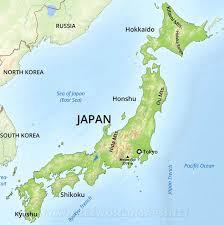

Welcome to Japan!
Japan
Japan is an island nation in the Pacific Ocean with dense cities, imperial palaces, mountainous national parks and thousands of shrines and temples. Shinkansen bullet trains connect the main islands of Kyushu (with Okinawa's subtropical beaches), Honshu (home to Tokyo and Hiroshima’s atomic-bomb memorial) and Hokkaido (famous for skiing). Tokyo, the capital, is known for skyscrapers, shopping and pop culture.
Google Maps
Japan's Capital
Tokyo (東京, Tōkyō) is Japan's capital and the world's most populous metropolis. It is also one of Japan's 47 prefectures, consisting of 23 central city wards and multiple cities, towns and villages west of the city center. The Izu and Ogasawara Islands are also part of Tokyo.
History
Prior to 1868, Tokyo was known as Edo. A small castle town in the 16th century, Edo became Japan's political center in 1603 when Tokugawa Ieyasu established his feudal government there. A few decades later, Edo had grown into one of the world's most populous cities. With the Meiji Restoration of 1868, the emperor and capital moved from Kyoto to Edo, which was renamed Tokyo ("Eastern Capital"). Large parts of Tokyo were destroyed in the Great Kanto Earthquake of 1923 and in the air raids of 1945.
Places to Visit in Tokyo
- Shinjuku
- Akihabara
- Tokyo Tower
- Sky Tree
Places to Visit in Japan
- Tokyo
- Kyoto
- Nara
- Takayama
- Nikko
- Kamakura
- Hiroshima
Video Credited From Visit Japan 2017